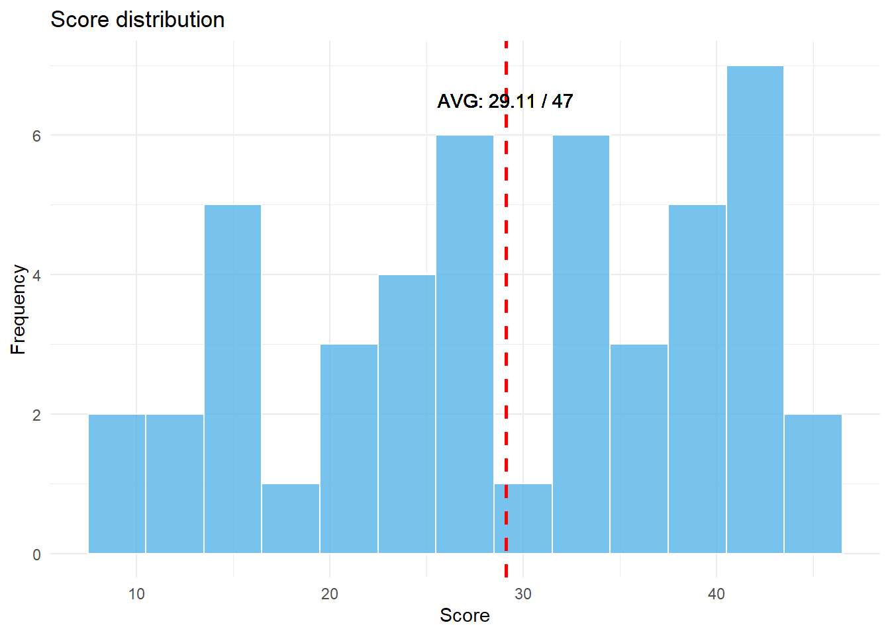
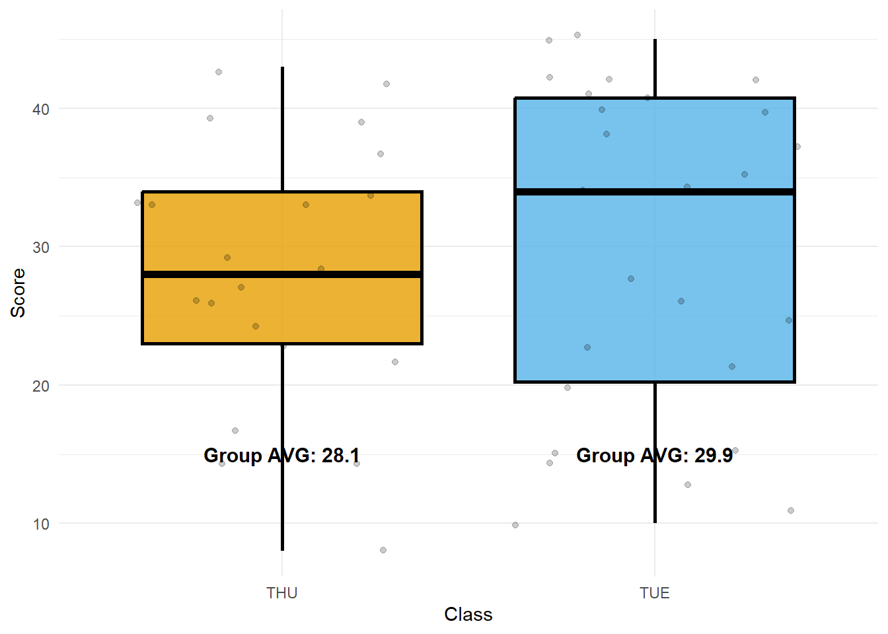
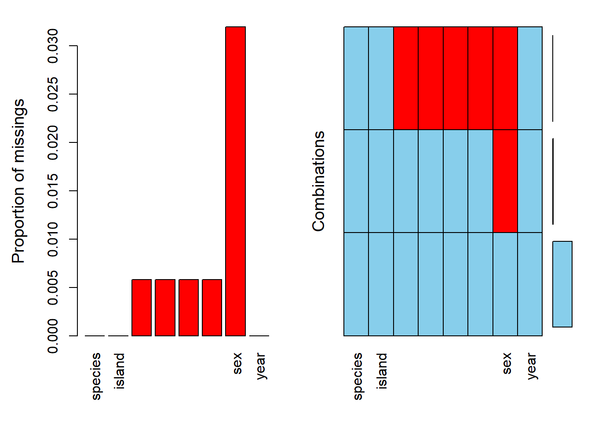
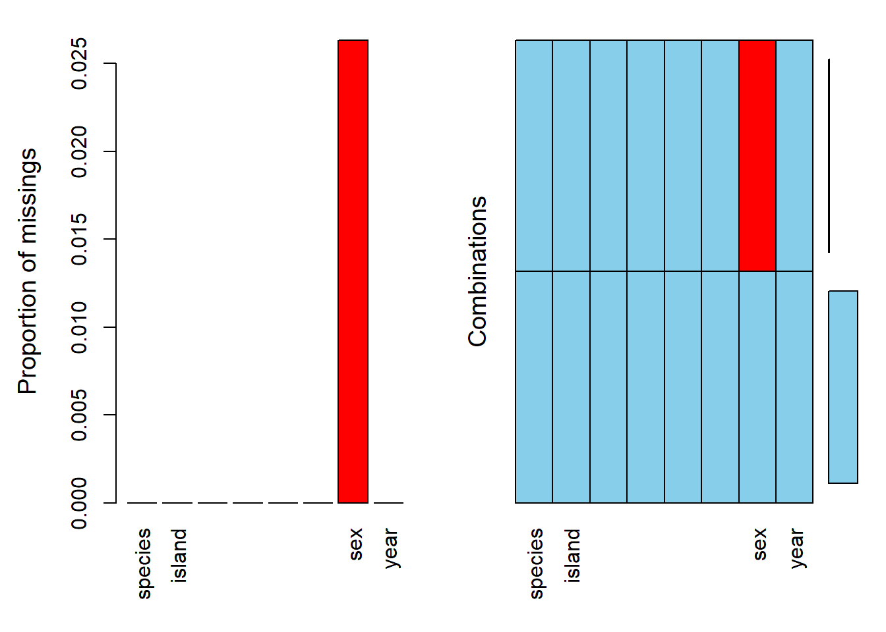

Class Score
Length:47 Min. : 8.00
Class :character 1st Qu.:21.50
Mode :character Median :29.00
Mean :29.11
3rd Qu.:39.00
Max. :45.00
Max score: 45 / 47
Min score: 8 / 47
AVG score: 29.11 / 47
Histogram
ggplot(my_data, aes(x = Score)) +geom_histogram(binwidth =3, color ="white", fill ="#56B4E9", alpha =0.8) +# Add vertical line for meangeom_vline(aes(xintercept =mean(Score)), color ="red", linetype ="dashed", linewidth =1) +geom_text(aes(x =29.11, y =6.5, label ="AVG: 29.11 / 47")) +# Add x and y axis labelslabs(x ="Score", y ="Frequency", title ="Score distribution") +# Set a simple themetheme_minimal()
Warning in geom_text(aes(x = 29.11, y = 6.5, label = "AVG: 29.11 / 47")): All aesthetics have length 1, but the data has 47 rows.
ℹ Please consider using `annotate()` or provide this layer with data containing
a single row.

Box-plot by classes
# Calculate average scores for each classclass_averages <- my_data %>%group_by(Class) %>%summarize(avg_score =mean(Score))ggplot(my_data, aes(x = Class, y = Score, fill = Class)) +geom_boxplot(alpha =0.8, color ="black", size =1) +# Add individual data points with jittergeom_jitter(alpha =0.2) +# Add text labels for average valuesgeom_text(data = class_averages, aes(x = Class, y =15, label =paste0("Group AVG: ", round(avg_score, 1))), color ="black", size =4, fontface ="bold") +# Remove legendguides(fill =FALSE) +# Choose color palettescale_fill_manual(values =c("#E69F00", "#56B4E9")) +# Add x and y axis labelslabs(x ="Class", y ="Score") +# Set a simple themetheme_minimal()

Date and Location
Date: 19 April (Wed) 13:00 - 15:00
Location: Room 312 (School of Communication, the same building)
Notice
Quiz will be administered through Google Forms.
Please bring your laptop for the quiz.
You are allowed to access any information through the Internet
However, communication with others is strictly prohibited.
Do not use any messaging apps (e.g., KakaoTalk, TikTok, Line, WeChat, etc.) during the quiz.
Upon completion of the quiz, you are required to submit your code.
Data
We are going to use a dataset named ‘penguins’ from the ‘palmerpenguins’ package. The dataset contains different body measurements for three species of penguins from three islands in the Palmer Archipelago, Antarctica. The penguins dataset is useful for learning R, because it contains multiple kinds of data (both categorical and numeric variables).
species island bill_length_mm bill_depth_mm
Adelie :152 Biscoe :168 Min. :32.10 Min. :13.10
Chinstrap: 68 Dream :124 1st Qu.:39.23 1st Qu.:15.60
Gentoo :124 Torgersen: 52 Median :44.45 Median :17.30
Mean :43.92 Mean :17.15
3rd Qu.:48.50 3rd Qu.:18.70
Max. :59.60 Max. :21.50
NA's :2 NA's :2
flipper_length_mm body_mass_g sex year
Min. :172.0 Min. :2700 female:165 Min. :2007
1st Qu.:190.0 1st Qu.:3550 male :168 1st Qu.:2007
Median :197.0 Median :4050 NA's : 11 Median :2008
Mean :200.9 Mean :4202 Mean :2008
3rd Qu.:213.0 3rd Qu.:4750 3rd Qu.:2009
Max. :231.0 Max. :6300 Max. :2009
NA's :2 NA's :2
Suggestions and bug-reports can be submitted at: https://github.com/statistikat/VIM/issues
Attaching package: 'VIM'
The following object is masked from 'package:datasets':
sleep
aggr(penguins)

# Variable with the most missing values: sexsum(is.na(penguins$bill_length_mm))
[1] 2
sum(is.na(penguins$bill_depth_mm))
[1] 2
sum(is.na(penguins$flipper_length_mm))
[1] 2
sum(is.na(penguins$body_mass_g))
[1] 2
# Filter out when missings in 'bill_length_mm'penguins %>%filter(!is.na(bill_length_mm)) -> penguins_new# Check the missing values againaggr(penguins_new)

# Missing value handling with mice library and check againlibrary(mice)
Attaching package: 'mice'
The following object is masked from 'package:stats':
filter
The following objects are masked from 'package:base':
cbind, rbind
iter imp variable
1 1 sex
1 2 sex
1 3 sex
1 4 sex
1 5 sex
2 1 sex
2 2 sex
2 3 sex
2 4 sex
2 5 sex
3 1 sex
3 2 sex
3 3 sex
3 4 sex
3 5 sex
4 1 sex
4 2 sex
4 3 sex
4 4 sex
4 5 sex
5 1 sex
5 2 sex
5 3 sex
5 4 sex
5 5 sex
####################### Score & Prediction # create a train datasettest <- train[seq(1,300,3),]# Prediction by using trained modelspred_dt <-predict(dt_model, test, type='class')pred_rf <-predict(rf_model, test, type='class')pred_nb <-predict(nb_model, test, type='class')
Warning: predict.naive_bayes(): more features in the newdata are provided as
there are probability tables in the object. Calculation is performed based on
features to be found in the tables.